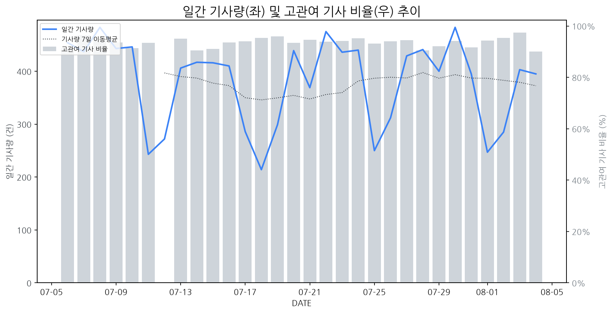

1
시장 활동 지표
기사량 추세 & 이상 징후 탐지
시장의 '전체 기사량'이 평소보다 비정상적으로 급증했는지(Spike)를 차트로 확인하고, LLM이 분석한 급등의 핵심 원인을 파악할 수 있음

고관여 기사란? 산업 연관 키워드로 수집된 기사들 중 디스플레이 키워드에 가중치를 반영하여 도출된 관련성 높은 기사
수집된 기사 수 (2026-08-04)
395
-10% WoW
기사량 변동 수준 (7일 이동평균 대비)
±6.7% 이하
2
오늘의 키워드
급격한 관심 ↑, 주목해야 할 키워드
1
갤럭시
+3.1σ
갤럭시 Z 폴드8 및 플립8 출시와 높은 사전 판매량이 시장의 뜨거운 관심을 증명합니다.
Related Metrics
금일 언급량: 15, 전일 대비: +9
Interpretation
폴더블 디스플레이 수요 증가 기대
Next Step
'갤럭시' 관련 상세 기사 및 경쟁사 반응 모니터링
2
폴더블
+2.7σ
차세대 폴더블 기술 진보와 신제품 출시 기대감이 폴더블 시장 관심 증폭시켰다.
Related Metrics
금일 언급량: 10, 전일 대비: +6
Interpretation
폴더블 시장 확대, 기회 포착
Next Step
'폴더블' 관련 상세 기사 및 경쟁사 반응 모니터링
3
모니터
+2.4σ
CSOT의 잉크젯 OLED 모니터 공개와 AI 차트 서비스 등 다양한 분야에서의 모니터 활용이 관심 증폭을 견인했습니다.
Related Metrics
금일 언급량: 9, 전일 대비: +6
Interpretation
OLED 모니터 시장 경쟁 본격화
Next Step
'모니터' 관련 상세 기사 및 경쟁사 반응 모니터링
4
hp
+1.9σ
HP 등 PC 제조사가 중국 CXMT의 D램 칩을 소량 사용하기 시작했다는 보도가 급증의 주요 원인입니다.
Related Metrics
금일 언급량: 5, 전일 대비: +5
Interpretation
중국산 D램 채택 확대 가능성
Next Step
'hp' 관련 상세 기사 및 경쟁사 반응 모니터링
3
실시간 Risk 키워드
경계해야 할 시그널 탐지
특정 토픽의 부정 감성 점수가 급등할 때 이를 즉시 탐지하고, "근거 기사" 링크를 통해 리스크의 실체를 빠르게 파악할 수 있음
키워드 분석 결과, 오늘은 걱정할 만한 하락 신호가 없습니다. (부정 언급량 변화: +1.5σ 이내)
4
주요 이벤트 모니터링
실시간 산업 동향 파악을 위한 주요 활동
최근 발생한 주요 기업들의 신제품 출시, 투자 등 주요 이벤트를 제공하여 매일 경쟁사 동향을 확인할 수 있음
삼성디스플레이와 LG디스플레이가 OLED 시장에서의 경쟁력 강화를 위해 기술 혁신과 투자를 확대하며 사업 영역을 확장하고 있습니다. 이는 미래 디스플레이 시장을 선점하기 위한 전략의 일환입니다.
Impact
OLED 기술의 발전과 생산 능력 증대로 인해 관련 디스플레이 시장의 성장이 가속화되고, 경쟁 심화로 인해 가격 경쟁력 확보가 중요해질 것입니다.
Next Step
자사 OLED 기술의 차별화 전략을 강화하고, 혁신적인 신기술 개발 및 생산 효율성 증대를 위한 투자를 우선적으로 고려해야 합니다.
일론 머스크는 1만 개 부품 공급망 부족을 언급하며 우려를 표했지만, 한국은 피지컬 AI 핵심 부품으로 이에 대한 대비가 되어 있다고 평가받고 있습니다. 이는 첨단 부품 기술력이 공급망 위기에서 경쟁력이 될 수 있음을 시사합니다.
Impact
피지컬 AI 관련 디스플레이 부품 및 기술에 대한 수요 증가와 함께, 안정적인 공급망을 확보한 한국 기업들의 경쟁 우위가 강화될 수 있습니다.
Next Step
피지컬 AI 기술과 연관된 핵심 디스플레이 부품의 자체 생산 능력 강화 및 공급망 다변화를 적극적으로 추진해야 합니다.
구글 픽셀워치5에 새롭게 탑재된 위성 SOS 기능은 구매 후 2년 동안만 무료로 제공될 예정입니다. 이 서비스는 긴급 상황 발생 시 통신망이 없는 곳에서도 구조 요청을 가능하게 합니다.
Impact
웨어러블 기기에서의 위성 통신 기능 통합은 디스플레이 탑재 공간 및 전력 소모량 증가와 같은 새로운 기술적 요구사항을 야기하여 관련 디스플레이 기술 발전을 촉진할 수 있습니다.
Next Step
디스플레이 제조 기업은 향후 웨어러블 기기에 위성 통신 기능 통합을 위한 소형화, 저전력화, 고성능 디스플레이 기술 개발에 집중해야 합니다.
삼성전자가 갤럭시탭 신제품에 원가 절감을 위해 미디어텍 칩을 다시 탑재한다. 이는 경쟁 심화 속에서 가격 경쟁력을 확보하기 위한 전략으로 풀이된다.
Impact
중저가 태블릿 시장에서 디스플레이 패널 가격 협상력이 높아지면서, 디스플레이 패널 제조사들의 수익성 압박이 커질 수 있다.
Next Step
디스플레이 제조 기업은 미디어텍 칩 탑재 기기의 물량 증가에 대비하여 생산 효율성을 높이고, 신규 기술 적용을 통해 차별화된 가치를 제공하는 방안을 모색해야 한다.
삼성전자가 아마존 프라임 비디오와 협력하여 'HDR10+ 어드밴스드' 기술을 지원한다. 이를 통해 HDR10+ 콘텐츠 생태계가 확장되고 사용자 경험이 향상될 것으로 기대된다.
Impact
HDR10+ 기술의 채택률이 증가하며 HDR 표준 경쟁에서 HDR10+의 입지가 강화될 수 있으며, 이는 디스플레이 제조사들의 HDR 기술 전략에 영향을 미칠 수 있다.
Next Step
디스플레이 제조 기업은 HDR10+ 지원을 강화하고, 관련 콘텐츠 제작사 및 플랫폼과의 협력을 통해 HDR10+ 생태계 확장에 적극 참여해야 한다.